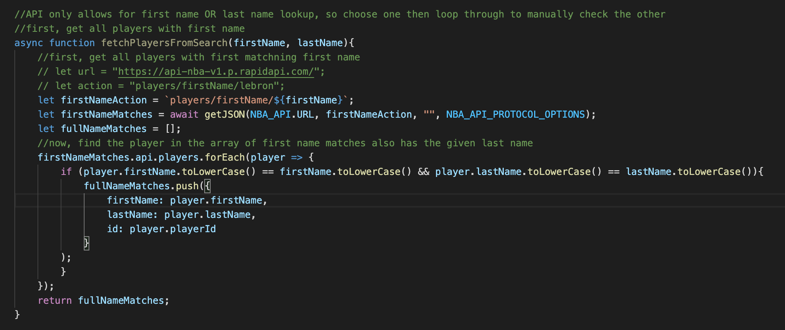
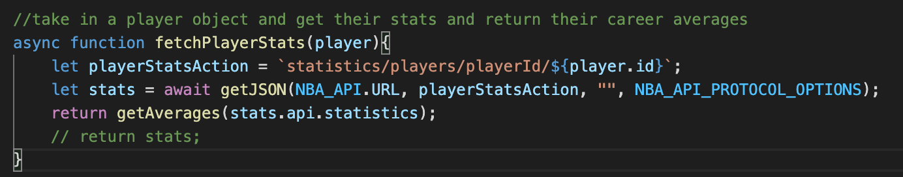
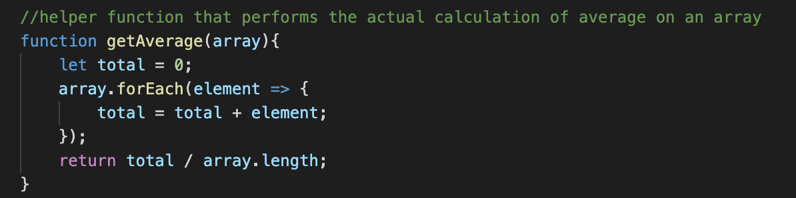
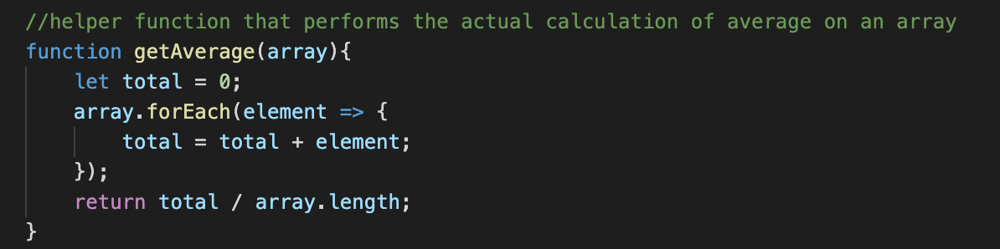
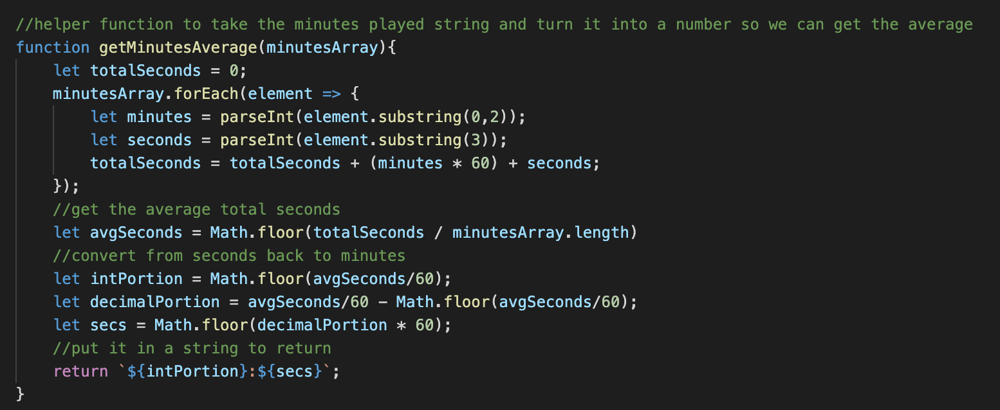

Progress Report 1
Demo Video
- Click here to see my demo video for update 1!
Data
-
I am using three different external API’s for my web app, and thus I need to consider the structure of the data separately for all three of these sources.
-
First, I am using the API-NBA from rapidapi.com to collect statistics on NBA players which I will ultimately display on the front end. In using this API there are a few different endpoints that I have used thus far.
-
In order to ultimately allow users to search for players, I have been using the /players/firstName/ endpoint.
 -
I then want the players that users search to be displayed along with their statistics, so I have been using the /statistics/players/playerId/ endpoint to fetch stats for each player.
 -
After actually getting a player and then getting their statistics, I need to format the data into an object with the fields I want, displayed in the way I want them.
-
I want to get career averages for each player, so I created helper functions that loop through the array of statistics for each player and return me a nicely formatted object with career averages.
 

-
Working with the minutes per game for each player was a bit trickier. Each stat is returned from the API as a string, so I needed to convert these to numbers so I could use them in average calculations. This was easy for most stats, where I could simply use parseInt(). Minutes, on the other hand, were returned as time - strings (e.g “22:05”), so I had to do some manual work to convert them to a workable number.
-
To do this, I created a helper function that formates minutes and calculates their averages for me
 -
In the end, I was able to get a nice JSON object with the stats of any player I want to search for. Here is an example of the statistics for the player Kevin Durant:

-
For the Twitter API, my progress was delayed because I had to wait for my Twitter Developer application to be approved before receiving any tokens/keys.
-
Once my application was approved, I was able to begin experimenting with the endpoints. I have not fully decided how I want to fetch and structure the data from the Twitter API, but I do know that I will likely need to search tweets based on an NBA player’s name.
-
Here is an example of the JSON data returned when I search “Lebron”. It is a list of tweets with “Lebron” in them:

Progresss
- On the backend, I have made some good progress on some of different API’s that are needed for my web app.
- In terms of the NBA statistics API, I have formatted the JSON object that I want returned and just need to add some extra filtering (i.e filtering out preseason data).
- For the Twitter API, a big challenge was figuring out how to use my API keys/token, and once I was able to do that I was able to start experimenting with the endpoints I would need. I still need to integrate these endpoints into the remainder of my features.
- I have not yet started working with the IBM Watson API. Once I finalize how I am going to structure the data I get from the Twitter API, I will start sending data into the IBM API and working with sentiment analysis.
Concerns
- One thing that I have discovered that might complicate my plan is the fact that the Twitter Developer Access that I have limits me to search results from the past week only. I need to be approved for the Academic Research Track in order to get search results from the entire Twitter archives, which is what I had in mind when planning this project.
Learning
- One thing that I have learned working on this project is that accesisng API tokens is not something that should be taken for granted. I was definitely concerned about not being able to get access to the Twitter API, and that was something I definitely overlooked when creating my project plan. Moving forward, I will be sure to view the requirements for each API and see which ones are better documented than others.
Plan
- For the next project deadline, I hope to come close to finishing the backend work for my project. This means that I need to integrate all three APIs that I plan on using, and I must also start working with the database that I will use. This will set me up for success for when I begin implementing the front end, as I will simply have to use Vue logic that I am comfortable with and will not have to worry about the intracacies of the APIs and data I am working with.
- I also want to start thinking about user login / oauth, at least on the backend side. I think the majority of the implementation there will be done when I am working on the front end, but I still want to create some sort of foundation that will make it easy to build off.
Summary
- Overall, I am feeling good about my project’s progress thus far. This was a very busy week for me, but by starting early I was able to get some solid work done and gain a firm grasp of how my APIs work.
- In terms of feasability, there were some hurdles encountered when actually trying to access the APIs and obtain keys, but those hurdles were overcome and I seem to be on a good trajectory now.